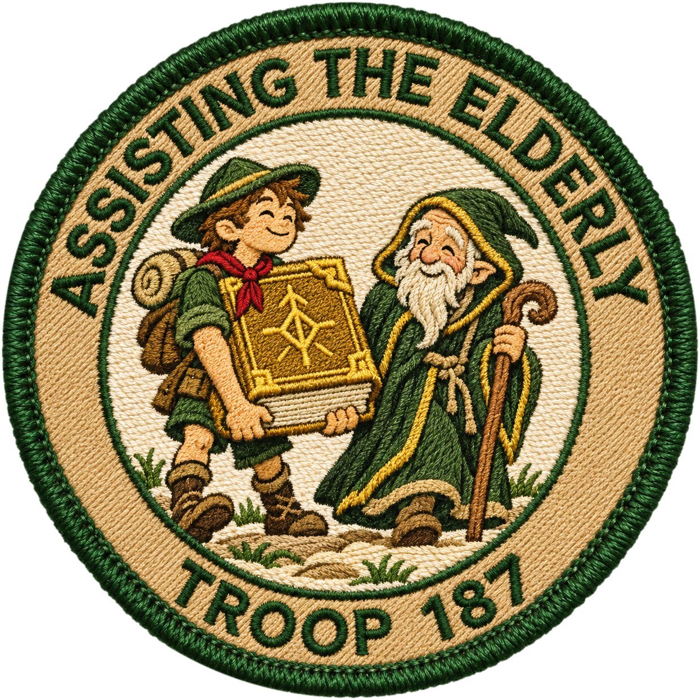
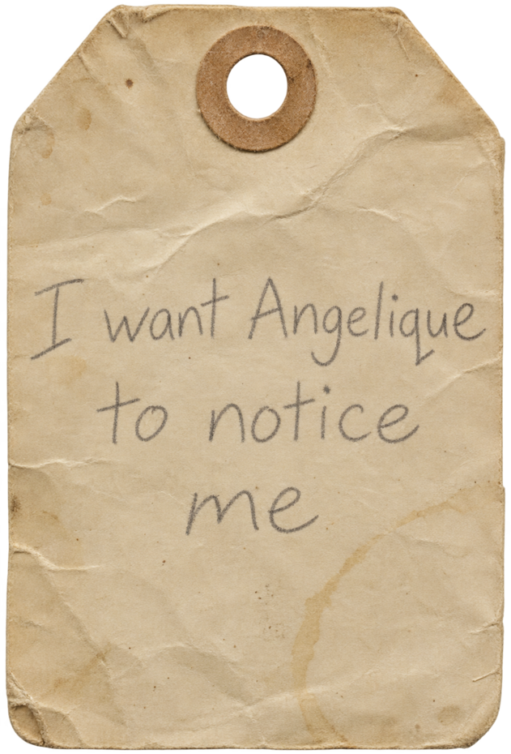

Print the card and hand it to Cody early. Russ ticks a box each time he helps Orlok, but every box needs the elder's signature — and Orlok refuses to sign all weekend. In the ending scene at the house, Orlok finally signs, and Russ's troop leader comes in and hands Cody a real badge (the patch below).
Printing: US Letter, 100% / actual size, colour. Page 1 is the card — card stock if they have it. Page 2 is the badge at 3″ with a 2.25″ spare; print it on sticker paper or card stock, cut on the dashed circle, and pin or stick it on Cody.
Art: Codex-generated (3 Nov) — the scout hauling a rune spellbook for a hooded old mage. Scott picked option B.
Wilderness Scouts of Transyltown · Troop 187
Merit Badge — Requirements Record
“A scout is a friend to those in the twilight of their years.”
To earn this badge, the scout shall render genuine, unpaid assistance to an elder of the community, and have each act of service verified by that elder in their own hand. Three acts are required.
Help your elder retrieve what they cannot reach on their own. Perform the task cheerfully and expect nothing in return.
Help grow or care for something your elder can no longer keep alive themselves. Leave it thriving.
Tend to your elder, or one in their charge, in a moment of real need — even when it costs you something to do it.
Adiuva senes, semper.Assist the elders, always
Badge awarded upon
completion of all three


Cut on the dashed lines · 3″ badge + 2.25″ spare · the willow tag (cut around the tag)